O noapte pe Secția A
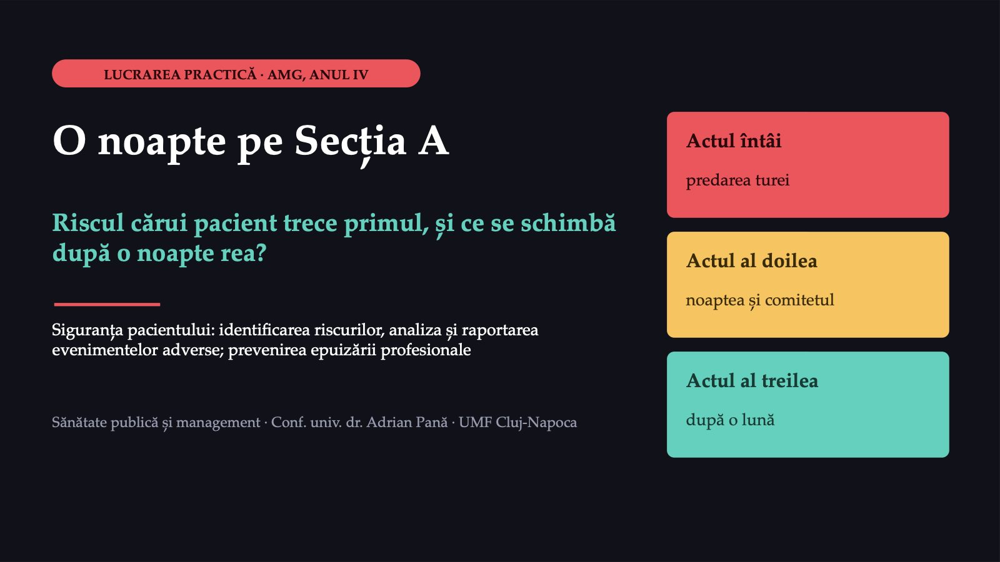
1 / 45Două ore, trei acte, un singur caz
![DESFĂȘURAREA Două ore, trei acte, un singur caz Momentul Ce faceți Minute Deschiderea Cazul Secției A și cele trei acte 5 Actul întâi Prima decizie, matricea de risc, pasul 1 al fișei 25 Actul al doilea A doua decizie, fișa de raportare, pasul 2 25 Comitetul secției Analiza cauzelor pe roluri, pasul 3 20 Actul al treilea Epuizarea în echipă, pasul 4, a treia decizie 25 Sinteza Ce faceți diferit, biletul de ieșire 10 Marți: grupele a patra și a cincea. Miercuri: grupele întâi, a doua și a treia. Votul se face pe telefon, la codul afișat: vot individual, două minute cu un coleg care a votat altfel, revot.](diapozitive/LP05/002.jpg) 2 / 45
2 / 45La finalul lucrării veți putea
![OBIECTIVELE LUCRĂRII La finalul lucrării veți putea 1 Identifica riscurile principale ale pacienților unei secții, la predarea turei. 2 Nota un risc după probabilitate și gravitate și ordona riscurile. 3 Deosebi pericolul, incidentul care nu a ajuns la pacient și evenimentul advers. 4 Completa o fișă de raportare cu faptele, fără judecăți despre persoane. 5 Face o analiză simplă a cauzelor și scrie o măsură de sistem, cu indicator. 6 Recunoaște cele trei dimensiuni ale epuizării profesionale și propune o măsură organizațională. Scorul riscului, pragurile de culoare și fișele de rol sunt convenții ale lucrării: nu se cer la examen.](diapozitive/LP05/003.jpg) 3 / 45
3 / 4526
![ACTUL 1 · SITUAȚIA · CAZ CONSTRUIT Secția A, ora 19:00: predarea turei Caz construit pentru curs; detaliile sunt plauzibile, nu reale. Valori ipotetice. 26 pacienți pe secție, noaptea de iarnă Doi asistenți, Radu C. și Elena P., și o infirmieră. Radu e la a patra noapte în șase zile. Dl T., 84 de ani, salonul 5 insuficiență cardiacă; diuretic și anticoagulant; a căzut acasă luna trecută; confuz noaptea trecută Dna V., 79 de ani, salonul 2 imobilizată după un accident vascular cerebral; pielea sacrată înroșită Dl Pop I., 71 de ani, și dl Popa I., 73 de ani saloanele 3 și 4; nume aproape identice; dl Popa, fără brățară Dna S., 66 de ani, salonul 6 diabet de tip 2; insulină bazală; glicemii în țintă Dl R., 58 de ani, salonul 7 pneumonie; cateter periferic de două zile](diapozitive/LP05/004.jpg) 4 / 45
4 / 45Riscul cărui pacient trece primul pe lista nopții?
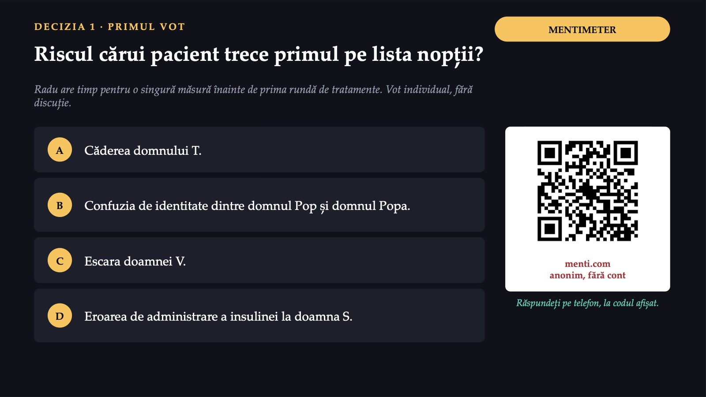
5 / 45Convingeți-l pe colegul care a votat altfel
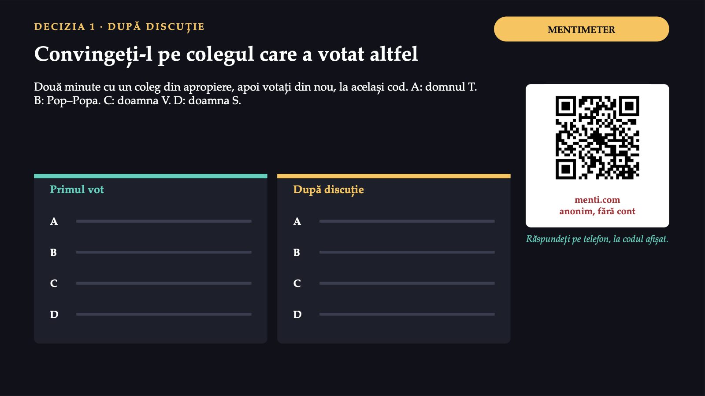
6 / 453–5
![CE ÎNSEAMNĂ A IDENTIFICA RISCURILE Patru riscuri frecvente, o singură listă a nopții 3–5 căderi la 1 000 de zile de spitalizare; peste o treime se soldează cu leziuni 1 din 30 pacienți cu vătămare legată de medicamente peste 1 din 10 adulți internați au escare doi identificatori independenți înaintea tratamentului, recoltării, transfuziei OMS, evenimente adverse frecvente; identificarea: standardele ANMCS. Ce identificați la patul pacientului ajunge, prin asistenta-șefă, în registrul riscurilor; ce scrie în registru se întoarce ca măsură.](diapozitive/LP05/007.jpg) 7 / 45
7 / 45Două întrebări despre fiecare risc
![MATRICEA DE RISC · CONVENȚIE A LUCRĂRII Două întrebări despre fiecare risc scorul riscului = probabilitatea × gravitatea (note de la 1 la 5) Probabilitatea Cât de probabil este să se producă în noaptea aceasta, după ce știți despre pacient și despre noapte. Gravitatea Cât de grave ar fi urmările pentru acel pacient. Vulnerabilitatea intră aici: la anticoagulant, aceeași cădere cere mai multă prudență. Ghidul NICE: la o persoană cu anticoagulant care s-a lovit la cap se ia în considerare examenul CT cerebral în primele 8 ore. 1–4 verde · acceptabil 5–9 galben · urmărit 10–14 portocaliu · acțiune în tura aceasta 15–25 roșu · urgent Scorul ordonează riscurile, nu le măsoară: un scor dublu nu înseamnă un pericol de două ori mai mare. Pragurile sunt convenția acestei secții.](diapozitive/LP05/008.jpg) 8 / 45
8 / 45Răspunsul apare după ședință
Răspunsul apare după ședință
Notați cei cinci pacienți
![FORMS PASUL 1 · MATRICEA DE RISC Notați cei cinci pacienți 1 Pentru fiecare pacient: riscul principal, nota de probabilitate și cea de gravitate, cu un fapt din caz. 2 Calculați scorurile și ordonați riscurile. 3 Pentru primele două, scrieți o măsură pe care Radu sau Elena o pot aplica în prima oră a turei. Scorul riscului = probabilitatea × gravitatea Individual, în formularul fișei. Măsura se scrie ca o acțiune, cu un moment. [QR FORMULAR] Răspundeți pe telefon, la codul afișat.](diapozitive/LP05/010.jpg) 10 / 45
10 / 45Rezolvarea se vede în formularul fișei, după ce o predați.
Rezolvarea se vede în formularul fișei, după ce o predați.
Evitare sau reducere, apoi verificare
![DE LA SCOR LA MĂSURĂ Evitare sau reducere, apoi verificare Evitare Se elimină sursa, dacă se poate. La dl T. nu se poate: diureticul și anticoagulantul sunt necesare. Reducere Se pune o barieră între pericol și pacient. La dl T. scad probabilitatea (lumina, soneria, drumul liber) și gravitatea (patul jos). Verificare O măsură bună se vede a doua zi: „soneria la îndemână” se vede la tur, „mai multă atenție” nu se vede nicăieri. În fișă, fiecare măsură: o acțiune, un responsabil și un moment, nu o intenție.](diapozitive/LP05/012.jpg) 12 / 45
12 / 45Noaptea pe Secția A: de la 19:45 la 03:30
![ACTUL 2 · COMPLICAȚIA · CAZ CONSTRUIT Noaptea pe Secția A: de la 19:45 la 03:30 19:45 Radu coboară patul dlui T., blochează frânele, pune soneria pe pat. Lampa de noapte din salonul 5 nu funcționează; becul fusese cerut de două ori. 21:00 Dl T. primește anticoagulantul. 22:30 Dl T. nu poate dormi. Medicul de gardă, chemat de la cardiologie, prescrie un medicament pentru somn, la cerere. Nu știe de căderea de acasă; întrebarea nu i se pune. 23:00 Brățara dlui Popa nu e refăcută: imprimanta e la internări. Elena etichetează din seară eprubetele pentru ora 06:00. 01:30–03:30 O internare din unitatea de primiri urgențe și o transfuzie îi țin pe amândoi asistenții departe de saloane.](diapozitive/LP05/013.jpg) 13 / 45
13 / 45Noaptea pe Secția A: de la 03:40 la 07:30
![ACTUL 2 · COMPLICAȚIA · CAZ CONSTRUIT Noaptea pe Secția A: de la 03:40 la 07:30 03:40 Radu îl găsește pe dl T. pe podea, lângă pat: mergea la toaletă. Soneria alunecase între pat și perete. Conștient, cu plagă a scalpului și hematom. Imediat Medicul de gardă cere examenul CT cerebral, pentru că pacientul primește anticoagulant, în acord cu ghidul NICE: fără sângerare. Plaga e suturată. Radu prinde soneria de pat și aduce o lampă de noapte în salonul 5. 06:00 La patul dlui Popa, Elena cere data nașterii înainte de recoltare: eticheta poartă numele dlui Pop. Nu recoltează; reface etichetele la pat. 07:00–07:30 Fiica dlui T. este anunțată telefonic. La predare, Radu și Elena îi spun Marei ce s-a întâmplat.](diapozitive/LP05/014.jpg) 14 / 45
14 / 45Pericol, incident, near miss, eveniment advers
![PATRU CUVINTE FOLOSITE TOT TIMPUL Pericol, incident, near miss, eveniment advers Pericolul o împrejurare, un agent sau o acțiune care poate produce o vătămare Incidentul orice abatere de la îngrijirea obișnuită care produce o leziune pacientului sau îl expune unui risc de vătămare Near miss incidentul care nu a ajuns la pacient: oprit înainte de a ajunge la el Evenimentul advers un incident care produce o vătămare evitabilă unui pacient Definițiile OMS, din cadrul conceptual pentru clasificarea internațională a siguranței pacientului.](diapozitive/LP05/015.jpg) 15 / 45
15 / 45Două incidente de natură diferită
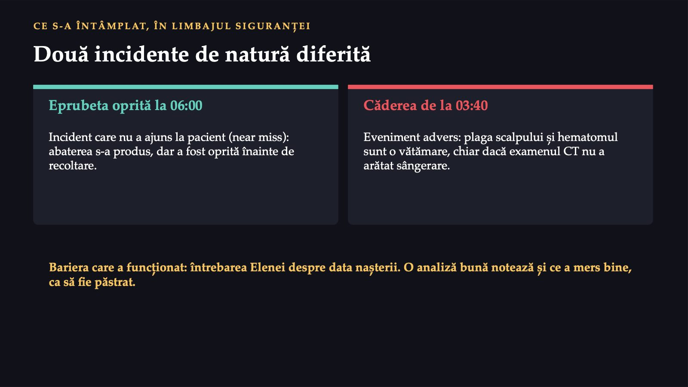
16 / 45Care descriere a căderii intră în fișa de raportare?
![MENTIMETER DECIZIA 2 · PRIMUL VOT Care descriere a căderii intră în fișa de raportare? Radu completează fișa în sistemul intern al spitalului. Variantele sunt abreviate; textul întreg: în note. Vot individual. A „Asistentul de noapte nu a supravegheat pacientul, care a căzut din neatenție.” B Ora 03:40, pacientul găsit pe podea, lângă pat, conștient, cu plagă a scalpului și hematom; mergea la toaletă; soneria alunecase, lampa nu funcționa; medicament pentru somn la 22:30; examen CT fără sângerare. C „Pacientul a căzut, fără consecințe grave.” D Radu așteaptă analiza cauzelor, în comitetul de dimineață, și completează fișa după ce se află cauza exactă. Răspundeți pe telefon, la codul afișat. menti.com anonim, fără cont](diapozitive/LP05/017.jpg) 17 / 45
17 / 45Convingeți-l pe colegul care a votat altfel
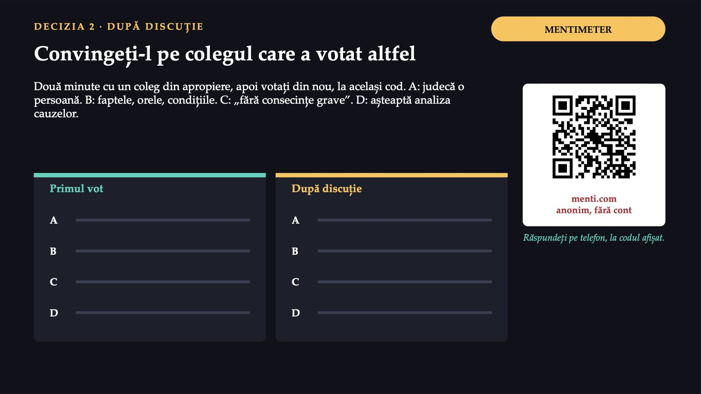
18 / 45Ce cuprinde fișa
![FIȘA DE RAPORTARE · MODELUL MINIM DE INFORMAȚII AL OMS Ce cuprinde fișa Modelul de bază · 8 categorii pacientul (vârsta, sexul) · momentul · locul · tipul incidentului · rezultatul pentru pacient · acțiunile întreprinse · rolul celui care raportează · agentul implicat, cu cauza bănuită, factorul contributiv și factorul de atenuare ca întrebări sub rubrică Modelul avansat · 10 categorii aceleași șapte, fără rubrica agentului, plus categorii proprii: cauzele, factorii contributivi și factorii care au atenuat urmările În ambele, categoriile sunt urmate de text liber. Fișa lucrării urmează modelul avansat, fără câmp pentru cauză: cauza o stabilește analiza de după raport.](diapozitive/LP05/019.jpg) 19 / 45
19 / 45Răspunsul apare după ședință
Răspunsul apare după ședință
Completați fișa căderii, apoi eprubeta
![FORMS PASUL 2 · FIȘA DE RAPORTARE Completați fișa căderii, apoi eprubeta 1 Pacientul 2 Momentul 3 Locul 4 Tipul incidentului 5 Rezultatul pentru pacient 6 Descrierea 7 Factorii contributivi bănuiți 8 Factorii care au atenuat urmările 9 Acțiunile întreprinse 10 Rolul celui care raportează Descrierea: numai fapte, în ordinea orelor. Apoi o fișă scurtă pentru eprubeta etichetată greșit și o propoziție: de ce o raportați, deși nu a ajuns la pacient. [QR FORMULAR] Răspundeți pe telefon, la codul afișat.](diapozitive/LP05/021.jpg) 21 / 45
21 / 45Rezolvarea se vede în formularul fișei, după ce o predați.
Rezolvarea se vede în formularul fișei, după ce o predați.
Analiza nu întreabă cine a greșit
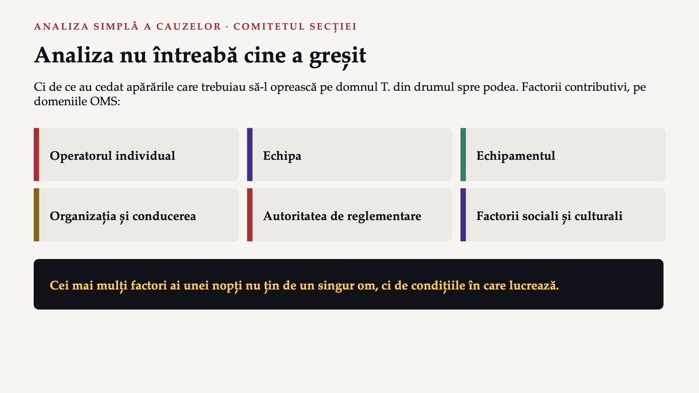
23 / 45Factorii se așază aproape singuri
![FACTORII CONTRIBUTIVI · CĂDEREA DOMNULUI T. Factorii se așază aproape singuri Domeniul În noaptea Secției A Echipamentul lampa de noapte nefuncțională; soneria care alunecă Echipa căderea de acasă, cunoscută la predare, nu a ajuns la medicul de gardă înainte de medicamentul pentru somn Organizația și conducerea doi asistenți pentru o secție plină și o internare; medicul de gardă pe două secții; becul cerut de două ori și neînlocuit; un asistent la a patra noapte în șase zile Pacientul vârsta, confuzia, diureticul, nevoia de a se ridica noaptea Operatorul individual oboseala, reală, dar urmare a planificării Formulare didactică, după domeniile OMS. Valori ipotetice, caz construit.](diapozitive/LP05/024.jpg) 24 / 45
24 / 45O singură cauză, întrebată de mai multe ori
![METODA „CINCI DE CE” · CONVENȚIE A LUCRĂRII O singură cauză, întrebată de mai multe ori 1 · Alegeți o cauză Nu toți factorii deodată: cel care pare cel mai important. 2 · Întrebați „de ce?” Din răspuns în răspuns, de obicei vreo cinci ori; numărul este orientativ. 3 · Opriți-vă la timp Când răspunsul următor iese din puterea spitalului sau apare o măsură de sistem. Lanțul se încheie cu o măsură de sistem (o procedură, o regulă), nu cu „mai multă atenție”. Legătura cu căderile secției: lucrarea a patra.](diapozitive/LP05/025.jpg) 25 / 45
25 / 45Scanați rolul vostru, apoi votați
![MENTIMETER COMITETUL SECȚIEI · 12 MINUTE Scanați rolul vostru, apoi votați Rolul 1 · Mara asistenta-șefă ian–feb Rolul 2 · Radu asistent de noapte mar–apr Rolul 3 · Medicul șef de secție mai–iun Rolul 4 · Fiica dlui T. iul–aug Rolul 5 · Calitatea structura de management sep–oct Rolul 6 · Directorul de îngrijiri nov–dec A O a doua infirmieră pe tura de noapte (măsură mare). B Senzori de pat pentru pacienții cu risc mare de cădere (măsură mare). C Evaluarea multifactorială în fișa de internare, cu întrebarea familiei, și regula întrebării despre căderi înaintea oricărui medicament pentru somn (ieftină). D O imprimantă de brățări pe secție și interzicerea etichetării eprubetelor în avans (ieftină). Răspundeți pe telefon, la codul afișat. menti.com anonim, fără cont](diapozitive/LP05/026.jpg) 26 / 45
26 / 45Mara, asistenta-șefă
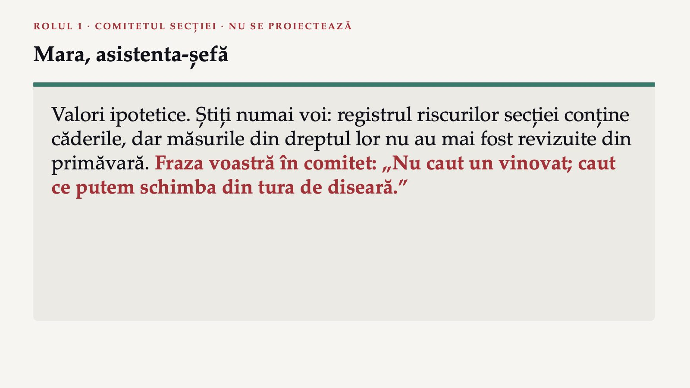
27 / 45Radu, asistentul din tura de noapte
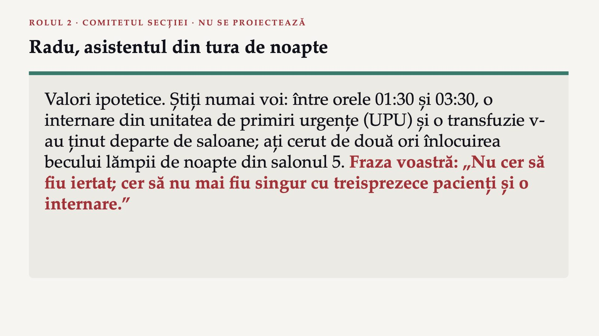
28 / 45Medicul șef de secție
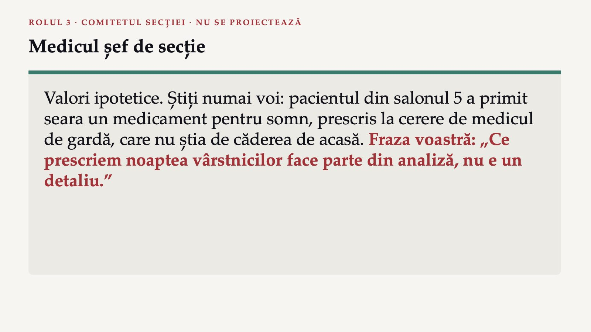
29 / 45Fiica domnului T.
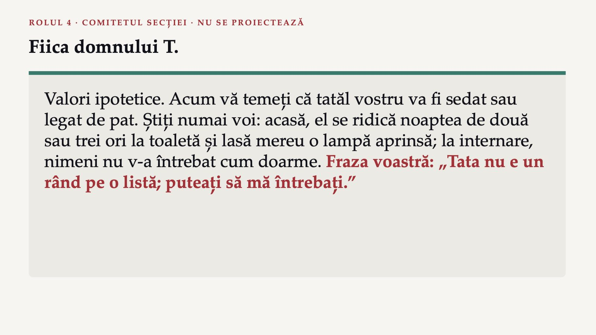
30 / 45Reprezentantul structurii de management al calității
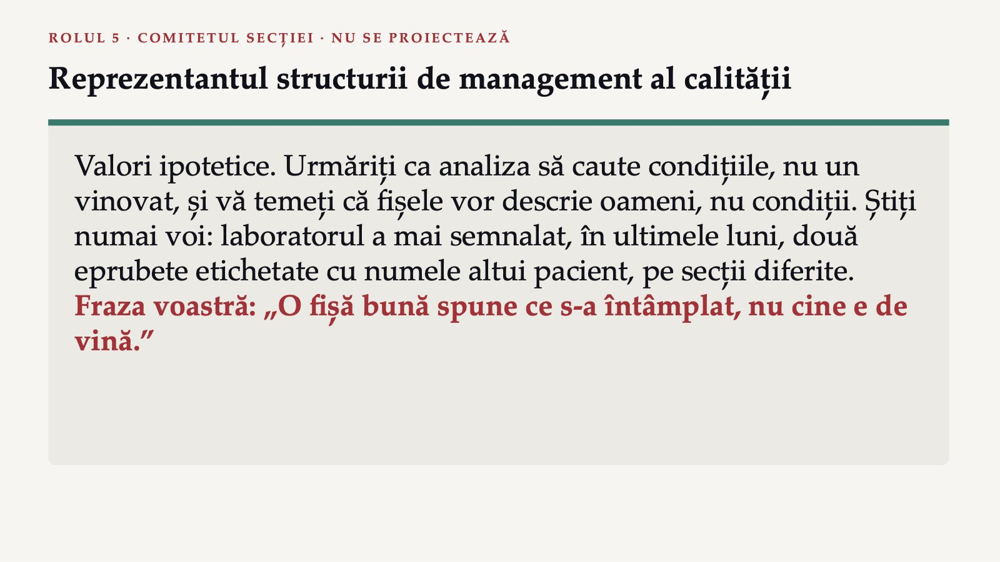
31 / 45Directorul de îngrijiri al spitalului
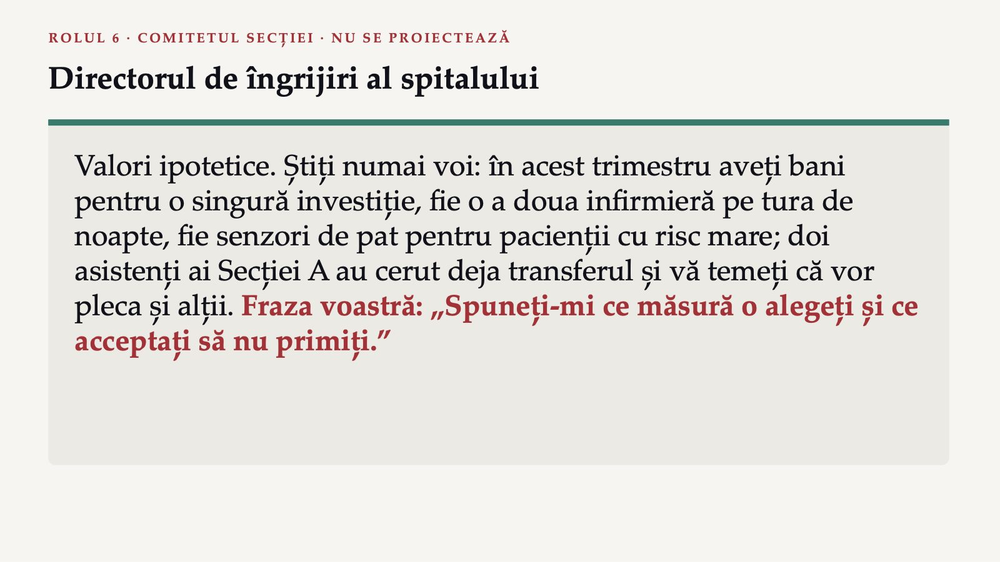
32 / 45Răspunsul apare după ședință
Răspunsul apare după ședință
Factori, „cinci de ce” și o măsură de sistem
![FORMS PASUL 3 · ANALIZA CAUZELOR Factori, „cinci de ce” și o măsură de sistem 1 Pentru căderea domnului T., așezați cel puțin cinci factori contributivi pe domeniile OMS. 2 Alegeți un factor și aplicați-i „cinci de ce”, până la o cauză asupra căreia secția poate acționa. 3 Scrieți o măsură de sistem, cu responsabil și termen, și un indicator după care Mara afla peste o lună dacă s-a aplicat. Nu „mai multă atenție”, nu „instruirea asistentului”, nu o sancțiune. [QR FORMULAR] Răspundeți pe telefon, la codul afișat.](diapozitive/LP05/034.jpg) 34 / 45
34 / 45Rezolvarea se vede în formularul fișei, după ce o predați.
Rezolvarea se vede în formularul fișei, după ce o predați.
Răspunsul apare după ședință
Răspunsul apare după ședință
Secția A, o lună mai târziu
![ACTUL 3 · DEZNODĂMÂNTUL · CAZ CONSTRUIT Secția A, o lună mai târziu Ce s-a schimbat Fișa de internare cere factorii riscului de cădere și întrebarea familiei; eprubetele se etichetează numai la pat; imprimanta de brățări a fost mutată pe secție. Ce a ales directorul A doua infirmieră pe tura de noapte, de la începutul trimestrului următor. Domnul T. a fost externat fără alte incidente. Radu A cerut să treacă pe ture de zi și i-a spus Marei că se gândește să plece din spital. La discuția lunară, Mara a notat, fără nume, șase fraze spuse de asistenți.](diapozitive/LP05/037.jpg) 37 / 45
37 / 45Trei dimensiuni, un fenomen ocupațional
![CE ESTE EPUIZAREA PROFESIONALĂ Trei dimensiuni, un fenomen ocupațional Clasificarea internațională a bolilor, revizia a 11-a: rezultatul stresului cronic la locul de muncă, gestionat fără succes. Epuizarea energiei sentimentul că ți s-a golit energia Distanțare și cinism distanțare mentală de muncă, sentimente negative sau cinism față de ea Eficacitate scăzută scăderea eficacității profesionale Nu este clasificată ca boală: este un fenomen ocupațional. Se aplică numai contextului profesional, nu altor domenii ale vieții. Legătura merge în ambele sensuri: oboseala și epuizarea duc la vătămarea pacienților, iar noaptea cu incident apasă mai departe pe cel implicat.](diapozitive/LP05/038.jpg) 38 / 45
38 / 45Așezați frazele echipei pe dimensiuni
![FORMS PASUL 4 · ȘASE FRAZE Așezați frazele echipei pe dimensiuni 1 „Mă trezesc obosită și după zilele libere; nu mai am energie nici pentru ai mei.” 2 „Pentru mine, salonul 5 e doar patul cu diureticul.” 3 „Nu mai cred că ce fac eu schimbă ceva pentru pacienți.” 4 „Ședințele astea sunt doar ca să bifeze cineva ceva într-un dosar; mie îmi sunt indiferente.” 5 „Sunt rupt de oboseală săptămâna aceasta, de la mutarea în apartamentul nou.” 6 „Fac greșeli pe care înainte nu le făceam și nu mai am încredere în mine noaptea.” Pentru fiecare: o dimensiune sau „nu se încadrează”, într-un rând de justificare. Apoi: de ce frazele nu permit un diagnostic și o măsură organizațională, cu responsabil și indicator. [QR FORMULAR] Răspundeți pe telefon, la codul afișat.](diapozitive/LP05/039.jpg) 39 / 45
39 / 45Rezolvarea se vede în formularul fișei, după ce o predați.
Rezolvarea se vede în formularul fișei, după ce o predați.
Nivelul care schimbă condițiile
![MĂSURILE ORGANIZAȚIONALE Nivelul care schimbă condițiile Planul global al OMS Unităților: durata adecvată și corectă a repartizării pe posturi, a programului și a pauzelor și o sarcină administrativă mai mică. Standardele ANMCS Evaluarea calității vieții profesionale, cu participarea reprezentanților angajaților; evaluarea culturii siguranței; protecția personalului care raportează; sprijin psihologic structurat. Individual, echipă, organizație: nivelul organizației schimbă condițiile din care vine stresul cronic.](diapozitive/LP05/041.jpg) 41 / 45
41 / 45Ce măsură alege întâi asistenta-șefă?
![MENTIMETER DECIZIA 3 · UN SINGUR VOT Ce măsură alege întâi asistenta-șefă? Secția C, chirurgie: evaluarea calității vieții profesionale arată mulți asistenți epuizați; trei au cerut transferul. Fără revot. A Un program individual de gestionare a stresului, în afara programului de lucru. B Planificarea turelor cu un număr maxim de nopți consecutive, înlocuirea absențelor și discuția structurată după incidente, cu asistenții. C Trimiterea asistenților la medic, pentru diagnosticul „epuizare profesională”, tratament și concediu medical. D Amânarea oricărei măsuri până la evaluarea de anul viitor. Răspundeți pe telefon, la codul afișat. menti.com anonim, fără cont](diapozitive/LP05/042.jpg) 42 / 45
42 / 45Răspunsul apare după ședință
Răspunsul apare după ședință
Cele trei acte și echipa
 44 / 45
44 / 45Trei întrebări pentru final
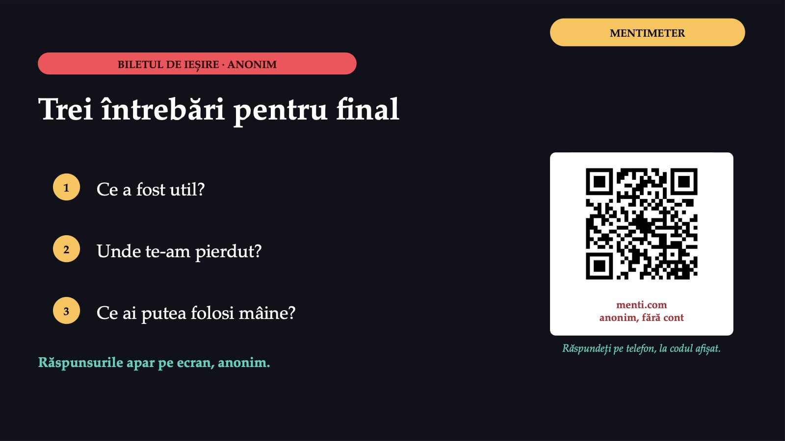
45 / 45Săgeți sau spațiu: navigare · O: vedere de ansamblu · N: notele prezentatorului · F: ecran complet · Esc: închidere